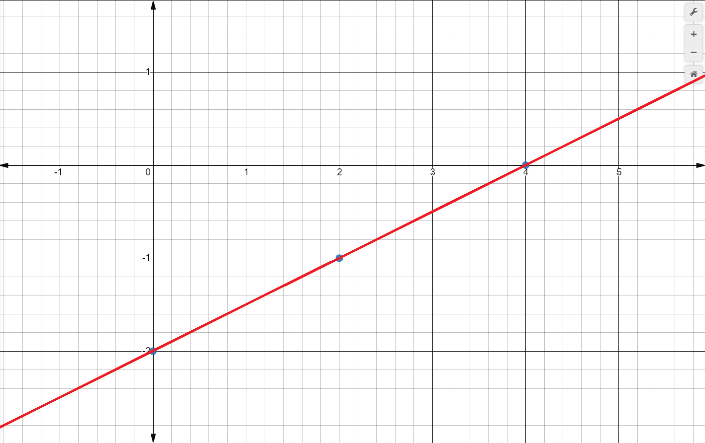

Лінійна функція
функція яку можна задати формулою y=kx+b, де y-залежна змінна, X-незалежна змінна(аргумент),k і b-деякі числа.
y=0,5x-2
If x=0 then y=-2
If x=2 then y=-1
If x=4 then y=0 etc.
| x | 0 | 2 | 4 |
|---|---|---|---|
| y | -2 | -1 | 0 |
| Графіком функції y=kx+b є пряма |
|---|
| If k>0, then linear function y=kx+b increases |
|---|
| If k<0, then linear function y=kx+b falls |
Щоб побудувати графік даної функції нам достатньо мати координати двох точок;
Побудуймо на координатній площині xOy точки (0;-2)і(4;0),оформлені у таблиці, і проведемо через них пряму.

Квадратична Ф-я
Квадратичною функцією називають функцію, яку можна задати у вигляді y=ax2+bx+c, де a,b,c- дійсні числа, при чому a# 0
Свою назву ця функція отримала тому, що її аргумент знаходиться у другому степені (в квадраті).
Graphics
Вигляд графіка
Графіком квадратичної функції є парабола. На Мал. 1 показано графіки декількох квадратичних функцій.